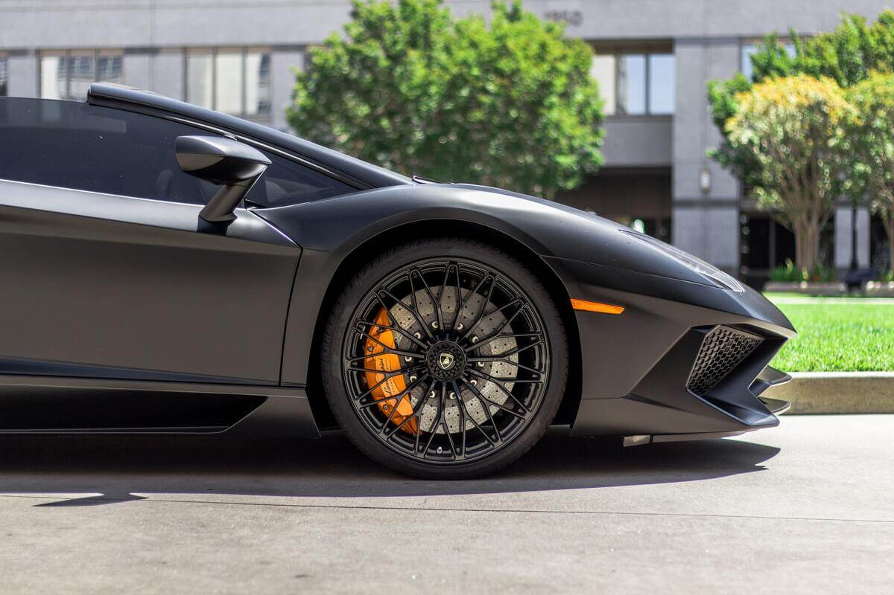
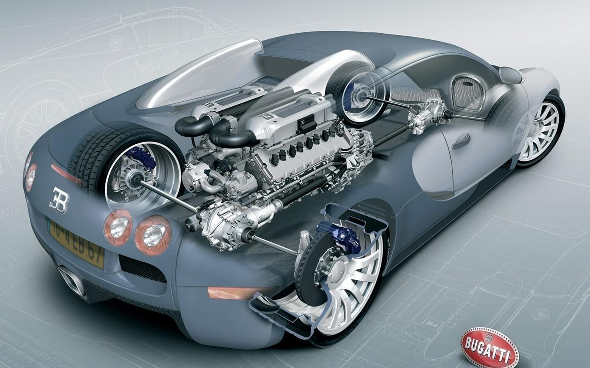
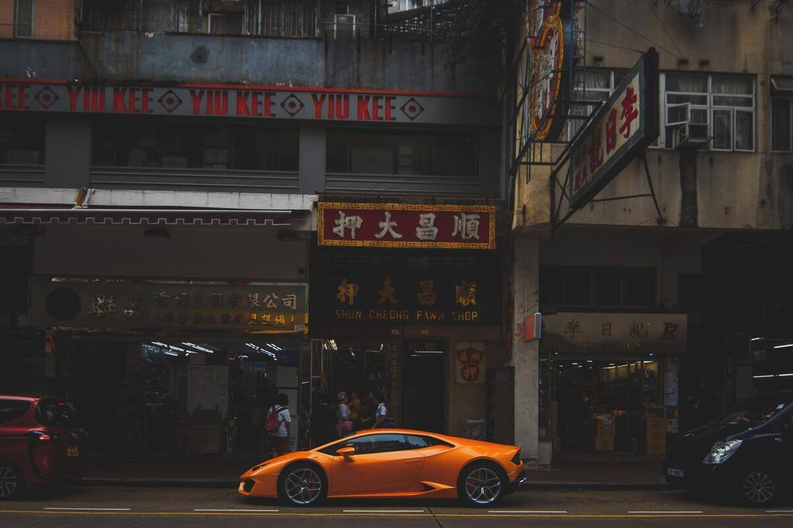
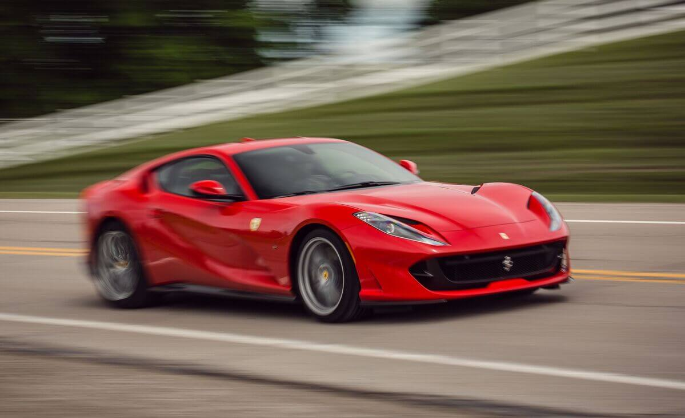
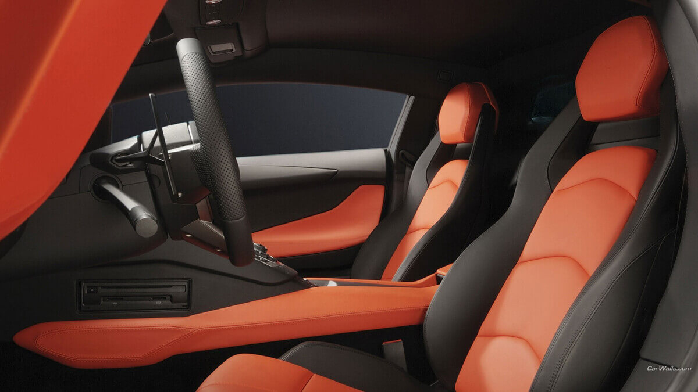
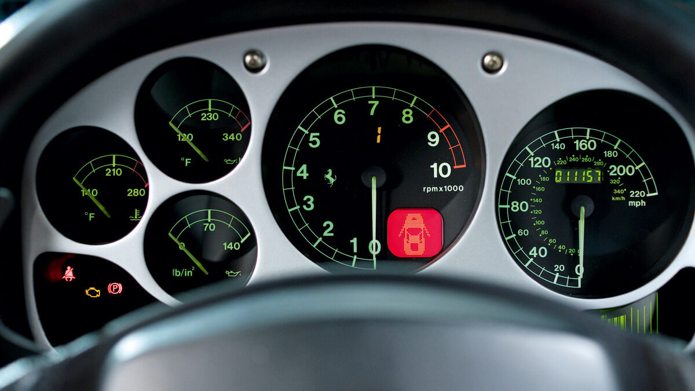

<!DOCTYPE html>
<html lang="tr">
<head>
    <meta charset="UTF-8">
    <meta http-equiv="X-UA-Compatible" content="IE=edge">
    <meta name="viewport" content="width=device-width, initial-scale=1.0">
    <title>Arabalar</title>
</head>
<body>
    
</body>
</html>
<head> <link rel="stylesheet" type="text/css" href=".css"/></head>
<br>
<center><div>
    <!--Link Start-->
        <a href="anasayfa.html">Anasayfa</a> |
        <a href="arabalar.html">En İyi Spor Arabalar</a> |
        <a href="aboutus.html">Hakkımızda</a> |
        <a href="contact.html">İletişim</a>
      <!--Link End-->
    </div></center>

<center><h2>Süper Araba Modelleri Nelerdir ?</h2></center>
<p>Süper spor araba modellerini daha çok magazin basınında şöhretli kişilerde görüyoruz. Gerçekten de hala binmesi zor olan ve zaten halk arabası olma iddiası olmayan bu modeller, çok dikkat çekici. Üstelik sadece tasarımları değil, teknolojileri ve fıyatları da dikkat çekiyor.
    Genellikle ünlü kişilerin kullandığı modeller olmaları da onları ayrıca fark edilir kılıyor. Peki, gerçekten süper spor araba nedir? Süper spor arabaları diğer otomobillerden ayıran özellikler neler? Orta gelirli vatandaşın Süper spor araba sahibi olma şansı var mı…</p>
<center></center>

<center><h3>Süper Spor Otomobil Ne Demek?</h3></center>
<p>Bu otomobiller akılda canlanınca ilk çağrışım yapan sıfat; “pahalı” oluyor 😊 Çok pahalılar ve farklılar. Süper spor araba, performans odaklı üretilmiş araba demek. Yani aslında yarış pistleri için üretiliyorlar. Zira, dev motorları ile İstanbul trafiğinde gıdım gıdım ilerlemek için çok ideal sayılmazlar. Performans için üretilen çok güçlü motorları olan bu otomobiller, spor sürüş keyfine odaklanıyor. Dolayısıyla ulaşım için değil özel bir zevk için üretiliyorlar.</p> 
<center></center>

<center><h3>Süper Spor Arabaların Özellikleri Nelerdir ?</h3></center>
<p> Bir çok kişi, süper spor arabaları sadece “havalı” ve “pahalı” olmaları ile tanımlıyor. Oysa bu otomobillerin çok önemli özellikleri var. Bunlardan bazılarını şöyle sıralayabiliriz:</p>
<center></center>

<center><h3>Süper Spor Araba Özellikleri: Performans Motorları</h3></center>
<p> Süper spor arabaların en önemli özelliği, yukarıda da bahsedildiği üzere performans odaklı motorları. Güçlü motor, yüksek hızlanma performansı ve yüksek yakıt tüketimi ile beraber geliyor. Hızlanma verileri, sıradan binek otomobillerle karşılaştırılamaz seviyelerde.</p>
<center></center>

<center><h3>Yüksek Yakıt Tüketimi</h3></center>
<p> Süper spor arabaların en önemli özelliği, yukarıda da bahsedildiği üzere performans odaklı motorları. Güçlü motor, yüksek hızlanma performansı ve yüksek yakıt tüketimi ile beraber geliyor. Hızlanma verileri, sıradan binek otomobillerle karşılaştırılamaz seviyelerde.</p>
<center></center>

<center><h3>Süper Spor Araba Özellikleri: Aşırı Dikkat Çekici Olmak</h3></center>
<p>Bir süper spor araba ile trafikte ilerlemek sandığınız kadar kolay değil. Hatta sıradan bir otomobile göre zor bile sayılabilir. Eğer daha önce en azından havalı bir cabrio deneyiminiz oldu ise ne demek istediğimizi hemen anlamış olmalısınız.  Konu Aston Martin, Lamborghini, Bugatti olunca trafikte ilerlemeniz imkansız hale gelebiliyor. İnsanların yoğun ilgisi, sürüş esnasında rahatsız edici olabiliyor. Diğer yandan rahatsız etmek isteyenler de oluyor 🙂 Elbette dikkat çekici olmanın güzel yanları da var.</p>
<center></center>

<center><h3>Efsane Tasarımlar</h3></center>
<p>Seri üretimle binlerce adet üretilen bir otomobile göre süper spor arabaların tasarımı çok inceliklidir. Tasarımcılar, mühendisler hatta sanatçılar otomobilin görünümü üzerinde titizlikle çalışır. Doğadan ya da mücevherlerden esinlenen efsane tasarımlar ortaya çıkar. Bu tasarımların hemen hepsi de otomobil tarihine geçer. Süper spor arabaların en önemli özelliği onları dikkat çekici kılan farklı tasarımlarıdır.</p>
<center></center>

<center><h3>Süper Spor Araba Özellikleri: Çok Hızlı</h3></center>
<p>Çok ama çok hızlı olmak istiyorsanız ki genellikle bir spor araba alırken amaç bu değildir, harika seçenekler var. Güçlü motor, aerodinamizm teknolojisi ve daha fazlası ile çok hızlı olmak mümkün. Hızlı otomobiller listesinde zaten hemen her modelin süper spor olduğunu görüyoruz.</p>
<center><h3>Teknoloji</h3></center>
<p>Otomobili tarihini incelediğimizde yeniliklerin bu radikal modellerle geldiğini görüyoruz. Yarış pistlerinden asfalta taşınan çok sayıda teknoloji var. İnsanoğlu; ilk dijital gösterge ekranı, ilk otomatik şanzıman, ilk hibrit motor, ilk spoyler gibi pek çok ilki yarış otomobilleri ile deneyimledi. Teknoloji, önce ​​süper spor otomobillerde uygulandı, denendi ve daha sonra seri üretime geçti. Bu nedenle süper spor arabaların teknolojiye yön veren bir yanı olduğunun da altını çizmek gerek.</p>
<center></center>

<center><h3>Küçük Yaşam Alanı</h3></center>
<p>Süper spor otomobillerin özellikleri incelendiğinde hemen fark edilir ki, yaşam alanları küçüktür. Küçük bagaj, küçük oturma alanı sunarlar. Çoğunda arka koltuk sırası yoktur. hatta bazılarında sıfır bagaj alanı da olabiliyor. Ancak bagaj, genellikle bir el çantasını koymaya yetecek kadardır. Burada amaç, aerodinamiğe engel olacak hacmi engellemektir. Çünkü bu otomobiller, ailecek bayram tatiline çıkmak için değil pistte hız yapmak için tasarlanıyor 😊</p>
<center></center>

<center><h3>En İyi Süper Spor Araba Marka ve Modelleri</h3></center>
<p>Süper spor arabalar hakkında genel bir fikir edindikten sonra ülkemizde de satışı olan bazı modellerden bahsedelim…</p>
<ul>
    <li> Aston Martin </li>
    <li>  Bugatti</li>
    <li> Chevrolet </li>
    <li>  Dodge </li>
    <li> Ferrari </li>
    <li> Lamborghini </li>
    <li> Lexus </li>
</ul>    
    <p>Ve Porsche gibi markaların süper spor modelleri ülkemizde de satılıyor. Aston Martin DB11,  Aston Martin DB9 hayalleri süsleyen modeller. Fiyatları da Kasım 2021 itibariyle 5 milyon TL civarında seyrediyor. Lamborghini Huracan, Lamborghini Gallardo,  Lamborghini Aventador modelleri de seviliyor. 5-7 milyon TL civarında. Bugatti Chirion en çok tutulan seçeneklerden biri. Ayrıca Bugatti Bolide ise markanın yeni konsept tasarımı. Bunun yanı sıra Bugatti Kiron da hayal otomobiller listesinde.</p>
    <center></center>
 
    <center><h3>Süper Spor Arabalar Ne Kadar Yakar ?</h3></center>
    <p>Yakıt tüketimi ve fiyat en çok merak edilen konular arasında. Bu otomobillerin hem satış fiyatları hem de kullanım bedelleri ağır 😊 O nedenledir ki, dondurma çubuğundan Maserati çıkarsa çok sevinmeyin 😊 Şaka bi’ yana süper spor otomobillerin yakıt tüketimi ortalamaları gerçekten oldukça yüksek. Örneğin Bugatti ​​​​CHIRON Sport modelinde 100 km’de 43 litre tüketim verisi var. Elbette elektrikli süper spor modeller de çok yaygın hale geldi. Hatta elektrikli bir otomobilin fosil yakıt tüketen bir otomobile göre daha performanslı olabildiğini de gördük.</p>
    
    
    <center><h3>Süper Spor Araba Videoları</h3></center>
    <p>Biraz da video izleyelim. Youtube otomotiv dünyası influencer’larından Doğan Kabak’ın bir videosunu buraya bırakıyoruz.</p>
   
    <center><iframe src="https://www.youtube.com/embed/BAxXovVsQKQ" width=620 height=350 ></iframe></center>

    
    <center><h3>Süper Spor Araba Kiralama Fiyatları Nasıl ?</h3></center>
    <p>Süper spor araba kiralama fiyatları, elbette model ekseninde büyük bir farklılık sunabiliyor. Kiralık süper spor otomobil arayışında yolcu360.com üzerinden marka model araştırması yapabilirsiniz. Rent a car firmalarının sunduğu lüks otomobilleri listeleyerek ilerleyebilir ve aradığınızı bulabilirsiniz.</p>
   
    <center><div>
        <!--Link Start-->
            <a href="anasayfa.html">Anasayfa</a> |
            <a href="arabalar.html">En İyi Spor Arabalar</a> |
            <a href="aboutus.html">Hakkımızda</a> |
            <a href="contact.html">İletişim</a>
          <!--Link End-->
        </div></center>
      <br><br>
